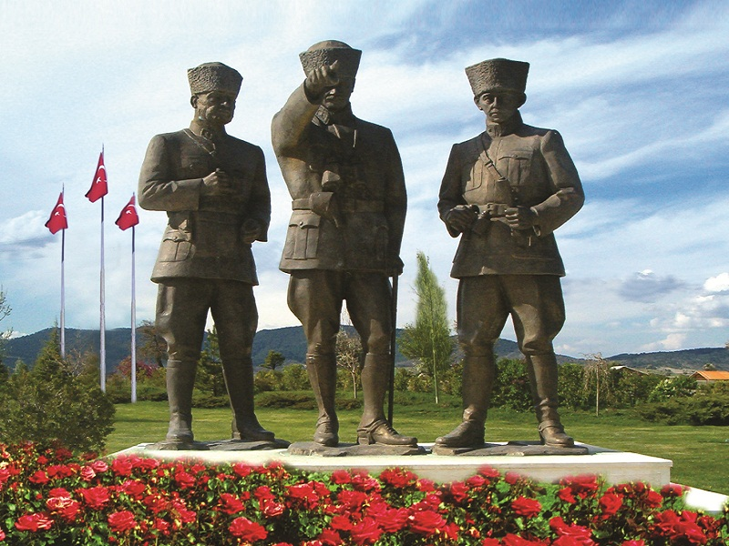

Berra'nın bloğuna hoşgeldiniz!
Berra'nın bloğuna hepiniz hoşgeldiniz!Burada güzel şehrim Kütahya'dan ve kendimden bahsedeceğim:)
Berra'nın bloğuna hepiniz hoşgeldiniz!Burada güzel şehrim Kütahya'dan ve kendimden bahsedeceğim:)
Kütahya, Türkiye Cumhuriyeti'nin Ege Bölgesi'nde yer alan bir ilidir.Kütahya ilinin nüfusu 576.688'dir. Bu nüfusun %78,3'ü şehirlerde yaşamaktadır. İlin yüz ölçümü 11.632 km2'dir. İlde km2'ye 50 kişi düşmektedir.2021 TÜİK verilerine göre 13 ilçe, 28 belediye, bu belediyelerde 222 mahalle, ayrıca 546 köy bulunmaktadır. Daha fazla bilgi için buraya tıklayınız.